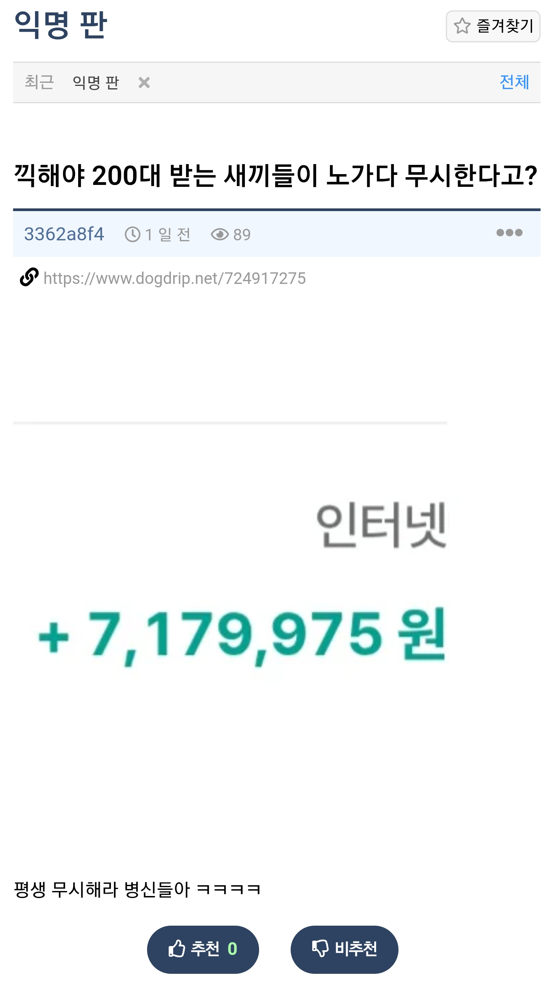
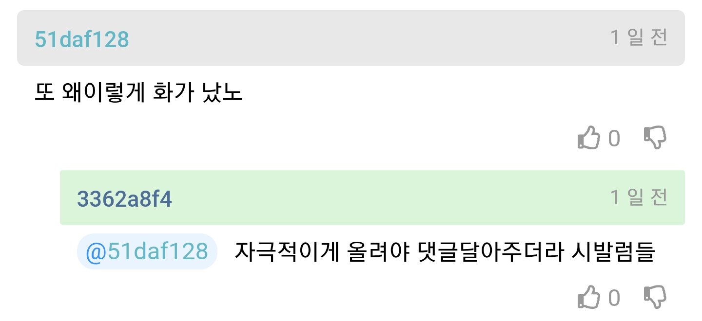
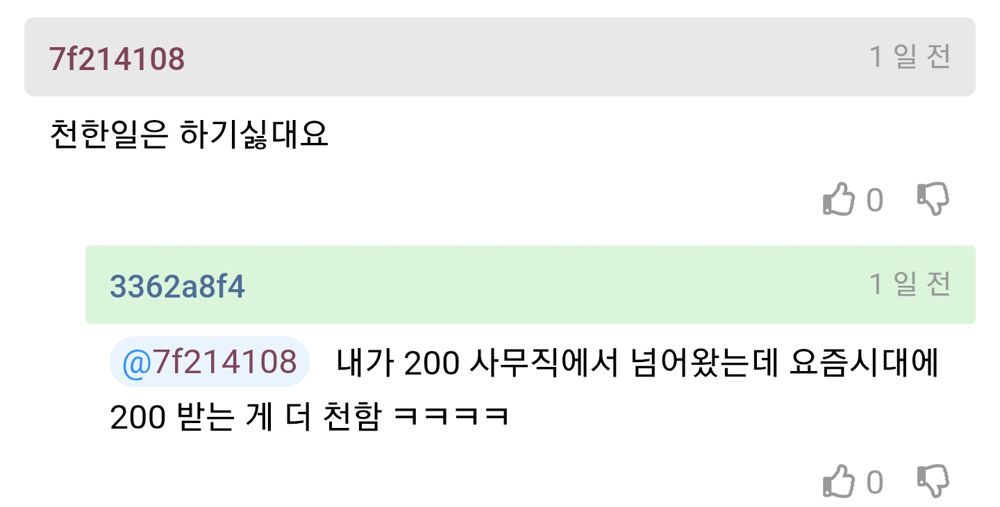
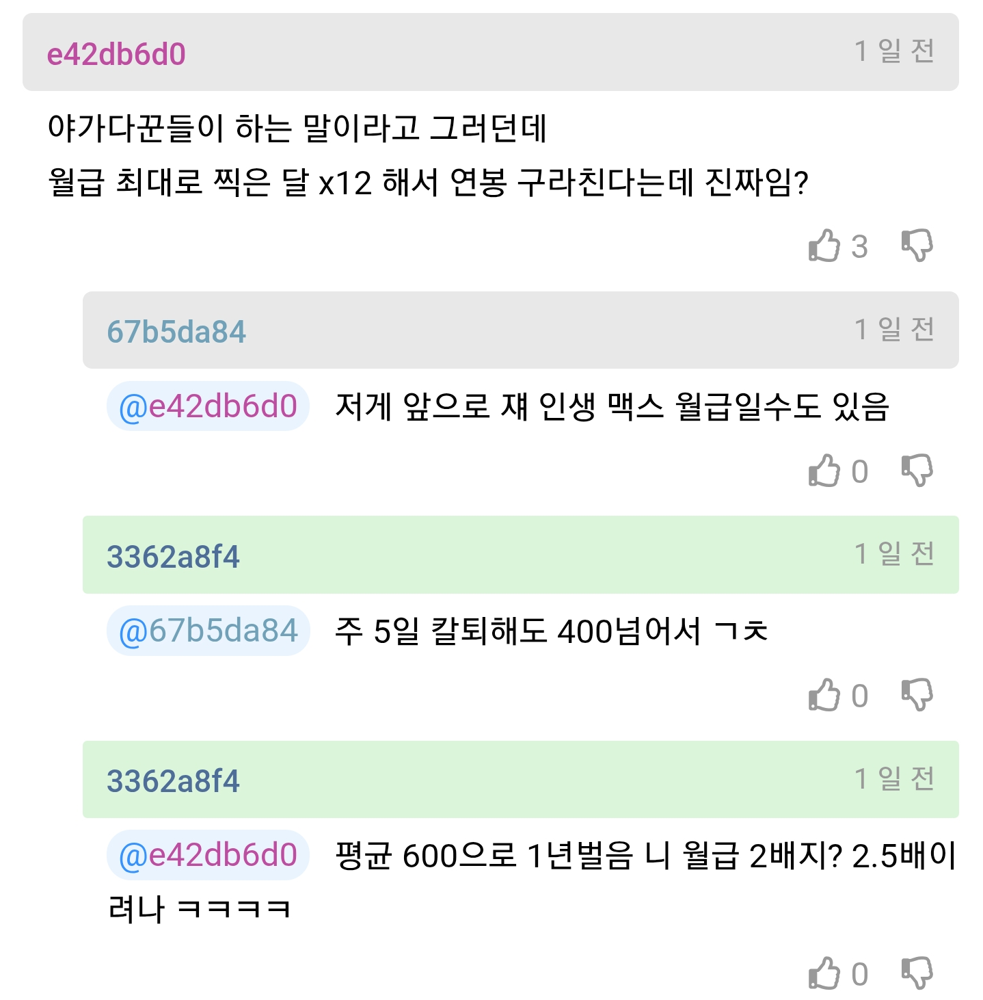

추정하자면 일당 20~23으로 추정하고 있음
주 6일 기본
주에 2~3회 연장 근무하면 저렇게 버는거 가능
아침7시~오후 5시 1.0배
아침7시~오후 7시 1.5배
아침 7시~오후 9시 2.0배
연장이라는 것은 12시간 근무하는거임




주에 2~3회 연장 근무하면 저렇게 버는거 가능
아침7시~오후 5시 1.0배
아침7시~오후 7시 1.5배
아침 7시~오후 9시 2.0배
연장이라는 것은 12시간 근무하는거임
저게 고점이라면서 신포도질하고
저래서 노가다 안한다느니 노가다쟁이가 왜 이렇게 긁혔냐느니
사실상 댓글들이 본문 글의 완성이네
통계학적으로 본문 글쓴이가 상위 10%에 가까운데 이것 참 ㅋㅋㅋㅋ
무시하는 새끼들이 병신인거지 거기다대고 저러는건 걍 자격지심일뿐
노가다를 무시한다기보다는 그냥 어울리기싫은 부류긴함
직업은 천하지않지만, 그 직업을 선택한 인간들이 천함
노가다 무시받는 이유는 사실상 이걸로 99%설명됨
1%는 어쩌다가 한번씩 보이는 멀쩡한 사람들.
저글 싼놈도 99%에 속함
언럭키 철구보다 많이버냐충 ㅋㅋㅋ
ㅅㅂㅈㄴ힘들겠다
묵묵히 잘하고 사는애들은 문제가없는데 저런애들은 현실에서도 뭔가 꼬여있어서 진상짓을할거같음
날무시하나 고작 식당 알바주제에!!!!
아 개드립 끊어야겠다
그래도 방구석에서 부모 등골 빼먹는 애들보단 사회에서 1인분 하는게 훨씬 낫다
사무직도 사무직 나름이긴 하지
근데 200 300 벌면서 노가다 무시하는건 좀 웃기긴함
돈이 곧 계급이다.
용인 하닉 공사 철야 하는 유튜버 보니까 많이 벌긴 하더라.
솔직히 지잡대 나와서 사무직이랍시고 200초 받으면서 노가다나 생산직 무시하는건 좀 웃김
돈이 계급이지뭐 직업에 귀천이 있나 누가 하느냐가 문제지 항상
부럽
노가다가 가다가 없어서 노가다라 하지
나도 사무직인데 8시 출근해서 주 3일정도 11시 퇴근하는데 ㅠㅠ 또르륵
흠
나도 12년차 노가다 하지만
왜저런애들이 많은지 의문임..
젊을땐 인식이 나빠서 소개팅힐때도 웬만하면 직업얘기도 잘안했었음
나같은경우는 장비라서
차주할때는 하루 100만원도 찍어봤지만 요즘은 사업망해서 일당받고 다니는데 하루8시간 30밑으론 안움직임
보통 달에 보름정도 일해서
450정도 버는거같음 많이할땐 20일넘게하면 600이상가져감
뭐 내 시간많고 크게 욕심없어서 이래사는중
노가다 너무 안좋게 보지말았으면..
물론 나도 몰상식한 사람들하고는 가까이 안지냄..
지리긴하네 ㅋㅋㅋㅋ 근데 저돈을 매월 꾸준히 받는게 아니니
무시하지 마라